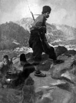

Hudut Oyunu
Yakorit’te Türk-Bulgar hudut mıntıkasını gezenler bütün horozların ibiklerini kesilmiş bulurdu. Yalnız Türk köylerinde değil, hududun ötesinden berisinden birbiri içine girmiş küçük Bulgar köylerinde de horozların ibikleri yoktu. Civar köylerde, âdeta, ibiksiz bir horoz nesli türemiş gibiydi.
Ömer’in Yakorit’te hudut muhafızlığı ettiği zamanlar devriyelere verdiği emirlerden biri de işte budur. Neferleri gün aşırı, koltuklarına kıstırılmış bir horozla muhafız kulesine gelirlerdi ve bunlar çok defa Bulgar hududundan şöyle bir dolaşmak için büyük ve kan kırmızı bir inci gibi taşıdıkları bir ibikle seyahate çıkmış horozlardı. Fakat dönüşleri, hiç de bu kadar parlak olmaz; garip ve alelacele bir hareketle başlarından hadım edilmiş horozlar, şaşkın ve sendeleyerek hududu geçmeye çalışırlardı. Ömer, eğer birisine izahat vermek lâzım gelirse;
-Cancağızım, derdi; ne yapayım. Bunlar merdane dövüşmüyorlar ki... Birbirlerinin ibiklerini tutup pes ediyorlar!
Bulgar muhafızları Türk hududundaki bu garip tabiatlı komşuyu tanırlardı. Çok kereler de ibiksiz bir horozu tuhaf buldukları için olacak; ara sıra, Türk muhafız kulesine doğru onları kendileri uçururlar yahut hudut kumandanının değişip değişmediğini öğrenmek isterlerse böyle yaparlardı.
Henüz Türk-Bulgar Harbi’nin başlamadığı günlerdi. İki tarafın acayip bir dostluk havası içinde birbirini yokladığı zamanlar... Sene 1910. Nevrekop hudut boyu karşılıklı silâh sesleriyle konuşuyordu. Günün herhangi bir dakikasında nihayetsiz bozkırların bir tarafından küçük bir mavzer ateşi bütün bir hududu yalayıp ateşe verecek kadar tehlikeli olduğu günler!..
Bununla beraber bu asabiyet ara sıra garip bir vuzuha döner; meselâ bir hafta devriyeler birbirine tesadüf etmeden dolaşır ve silâh atıldığı işitilmezdi. Bu günlerde hudut kumandanları yarı bir dostluk havası içinde birbirlerine ziyafet verirler; sonra, muhafız kulelerine çekildikleri dakika, öteden beriden tek silâhlar işitilir; hava, soğukta kurumuş keten bir bez gibi gerilirdi.
Böyle günlerden bir gündü. Bulgar muhafızları Ömer’i bir ziyafete çağırdılar.
Hepsi de taze bir milliyet havası ile dolu genç ve tirendaz zabitler... Bahusus ki ihtiyar bir imparatorluğun yanı başında bulunuyorlar; onun bol meyvelerle ağır bir halde aşağı sarkan dallarına vakit vakit taş atmaktan hoşlanan yaramaz bir çocuk gibi hareket ediyorlardı.
Ziyafet neşeli geçiyordu. Yazdı. Biz üzüm çardağı altında Nevrekop sırtlarının hafif rüzgârı duyuluyor; Bulgar zabitlerinin ikram ettiği hakiki bir Bulgar şarabının kokusu, imkânı yok, insanın kafasını terk etmiyordu. Yahut bütün uzuvlar, diğer vazifelerini unutarak, yalnız koku almak için yaratılmışlar gibiydi; tek bir şamme hissi hüküm sürüyordu.
Birdenbire çardağın bir tarafında, kızarmış tavukların kokusu gelen bir kapı açıldı.
Bir Türk kadını kıyafetinde peçeli ve çarşaflı bir Çingene karısı!..
Bir dakika evvel Bulgar zabitlerinin milli bir oyun oynadıkları küçük meydana doğru alelacele ilerledi ve âniden, gayda garip bir şark havası çalmaya başladı.
Ömer’in birdenbire burulduğu hissedilmişti. Bulgarlar, bir Bulgar işret meclisinde bir Türk kadını oynattıktan başka, üstelik onu bir de Çingene yapıyorlardı. Gayda bütün hududu ayağa kaldıracak kadar yüksek bir sesle çalıyor; Bulgar zabitlerinin kahkahaları devriyelerin kulaklarına kadar gidiyordu.
İşte, Yakorit horozlarının ibiklerini uçuran Ömer’e bir oyun!
Hem de nasıl bir oyun!
Ömer, birdenbire silâhına davranacak gibi olmuştu. Birdenbire, içerisindeki bütün fişeklerle, Çingene karısını bir tarafa iterek, tam ortada, etrafına sıralanmış Bulgar zabitlerinin üzerine doğru, bir yayıklım ateş gibi atılmak!..
Sonraları bu hatırayı anlatan Ömer:
-Cancağızım, derdi. Düşündüm ki yamyamlık olacak. Hem de beni mat etmişlerdi. Hazmettim!
Ertesi hafta, ziyafet sırası Ömer’deydi. Yedi gün büyük bir sükûnet içinde geçmişti. Her iki taraftan da ne bir silâh, ne küçük ve asabi bir işaret. Hatta o hafta içinde, Ömer, ibikli horozlara bile dokunmadı.
Bulgar zabitlerinin ikide bir hududun bir tarafından gizli gizli geçirdikleri beslenmiş horozların ibiklerini görmemezliğe geldi.
Ömer’in ziyafeti bir Türk içkisi ile başlamıştı. Balkanların demlendirilmiş meşhur rakısı. Sofra bol bir meze ile dolu idi. Hava sıcak ve yakıcı!..
Bulgar zabitleri sofraya oturdukları sıra, Ömer seslendi:
- Dimiko, hey, Dimiko!..
Dimiko, Bulgar meyhanecinin oğlu idi. Henüz on altı yaşında; uzun boylu, sarı saçlı, iri ve yeşil gözleri garip bir meyve gibi iştah veren bir delikanlı.
Ömer;
- Gel bakalım Dimiko, dedi. Bugün hizmet edeceksin bize!
Dimiko hafif pembeleşti ve Bulgar zabitleri Dimiko’nun yüzünde, Varna bahçelerinin şafak rengine yakın hafif pembeliğine karşı tuhaf bir huzursuzluk içinde kaldılar.
Dimiko, o gün gece yarısına kadar sakilik etti. Garip bir sakilikti bu! Mezeleri değiştirip tazeliyor ve ara sıra Bulgar zabitlerinin elinden aldığı bir kadehi yudum yudum içiyordu.
Ömer, rakı ile dolu bir testi kadar kafaların epeyce buğulandığı bir sıra birdenbire ayağa kalktı:
- Gospodinler! Dedi.
Avuçlarında tuttuğu kadehi, bir kılıcı kaldırır gibi havaya kaldırmıştı:
- Gospodinler; şerefinize!
- Dimiko’nun şerefine.
Sesler birbirini tamamladı:
- Dimiko’nun!
- Dimiko’nun şerefine.
- Hepinizin şerefine.
Bir saniye durdu:
- Gospodinler, diye tekrarladı; geçen hafta bana verdiğiniz ziyafetin şerefine... Yalnız geçen haftaki Çingene idi. Bu halis Bulgar. Hem de erkektir ha...[142]